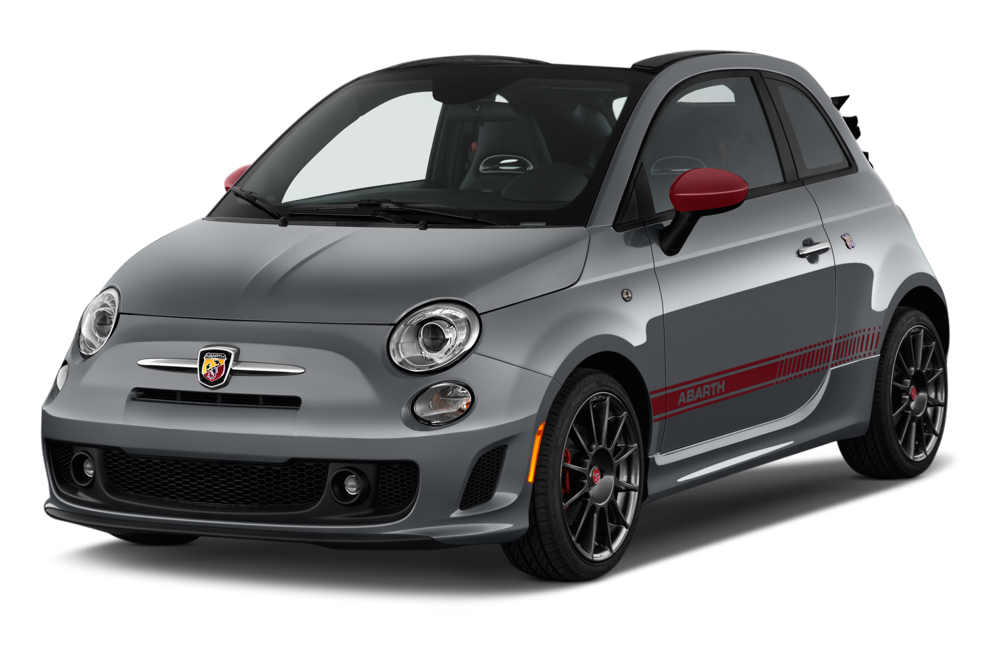

|
Abarth is an Italian racing and road car maker and performance division founded by Italo-Austrian Carlo Abarth in 1949. Abarth & C. S.p.A. is owned by Stellantis through its Italian subsidiary. Its logo is a shield with a stylized scorpion on a yellow and red background.
|
 |
The Abarth is powered by a 1.4-litre turbocharged engine, but it doesn't feel like it's lacking any power - when the turbo kicks in it feels pretty fast on the road, and it's a fun engine to drive with.
The Abarth gets lower suspension and bigger brakes, meaning the ride is really firm. On a twisty road, however, it's a heap of fun - but the engine needs to be on boost before you can really get going, because when you change gear sometimes it takes far too long to get into the power band. Tyre and wind noise are very intrusive, but the tuned exhaust sounds great.